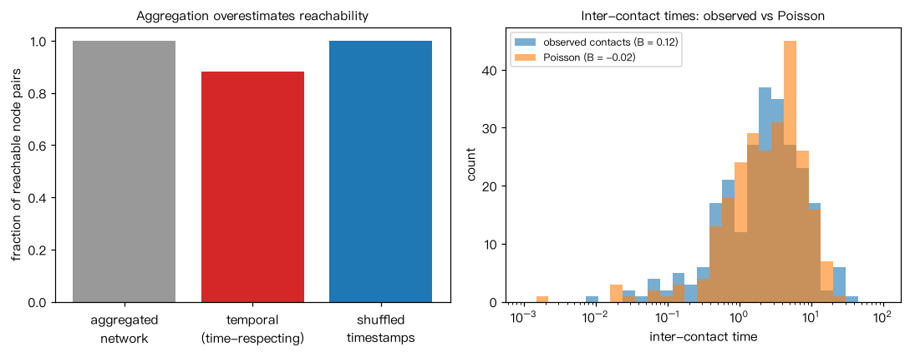

Example09 / 13
时间网络——时间一致路径与聚合网络的可达性
用接触序列 (u, v, t) 表示时间网络。若信息只能沿时间递增的接触传播（时间一致路径）， 那么聚合网络（忽略时间）上可达的节点对，在时间网络上未必可达。 本例生成 30 个节点的模拟接触数据，比较：(1) 聚合网络的可达节点对比例； (2) 时间网络的可达比例；(3) 随机打乱接触时间戳（保留谁和谁接触、改变顺序）后的可达比例。 同时计算节点间接触间隔的阵发性 B = (σ - μ)/(σ + μ)：泊松过程约为 0，阵发性越强越接近 1。 解读：聚合网络会高估传播可达性；打乱时间戳是常用的零模型，用来判断时间顺序本身是否重要—— 这里原始数据的可达比例低于打乱后的比例，说明接触的先后顺序与阵发性限制了传播路径。
Output输出图

Output文字输出
30 个节点，60 个接触对，252 次接触 可达节点对比例：聚合网络 1.00，时间网络 0.88，打乱时间戳 1.00 全体接触的阵发性 B = 0.12；同样数量的泊松接触 B = -0.02
Code代码
# 用接触序列 (u, v, t) 表示时间网络。若信息只能沿时间递增的接触传播（时间一致路径），
# 那么聚合网络（忽略时间）上可达的节点对，在时间网络上未必可达。
# 本例生成 30 个节点的模拟接触数据，比较：(1) 聚合网络的可达节点对比例；
# (2) 时间网络的可达比例；(3) 随机打乱接触时间戳（保留谁和谁接触、改变顺序）后的可达比例。
# 同时计算节点间接触间隔的阵发性 B = (σ - μ)/(σ + μ)：泊松过程约为 0，阵发性越强越接近 1。
# 解读：聚合网络会高估传播可达性；打乱时间戳是常用的零模型，用来判断时间顺序本身是否重要——
# 这里原始数据的可达比例低于打乱后的比例，说明接触的先后顺序与阵发性限制了传播路径。
import numpy as np
import networkx as nx
def temporal_reach(contacts, n):
"""按时间顺序扫描接触，返回可达矩阵 R[i, j]：i 出发的信息能否沿时间一致路径到达 j。"""
R = np.eye(n, dtype=bool)
for u, v, t in sorted(contacts, key=lambda x: x[2]):
# 同一时刻的接触按顺序处理（简化处理）；无向接触双向传递
new_u, new_v = R[:, u] | R[:, v], R[:, u] | R[:, v]
R[:, u], R[:, v] = new_u, new_v
return R
rng = np.random.default_rng(42)
n, T = 30, 1000
# 接触对来自一个连通的稀疏网络；每对节点在 1–3 个随机“活跃期”内各接触数次（阵发性）
pairs = list(nx.connected_watts_strogatz_graph(n, 4, 0.2, seed=1).edges())
contacts = []
for u, v in pairs:
for c in rng.uniform(0, T, rng.integers(1, 4)):
contacts += [(u, v, float(t)) for t in np.clip(c + rng.normal(0, 5, rng.integers(1, 4)), 0, T)]
times = np.array([t for _, _, t in contacts])
print(f"{n} 个节点，{len(pairs)} 个接触对，{len(contacts)} 次接触")
G = nx.Graph([(u, v) for u, v, _ in contacts]); G.add_nodes_from(range(n))
agg = np.mean([[nx.has_path(G, i, j) for j in range(n)] for i in range(n)])
R = temporal_reach(contacts, n)
shuffled = [(u, v, t) for (u, v, _), t in zip(contacts, rng.permutation(times))]
Rs = temporal_reach(shuffled, n)
print(f"可达节点对比例：聚合网络 {agg:.2f}，时间网络 {R.mean():.2f}，打乱时间戳 {Rs.mean():.2f}")
def burstiness(ts):
dt = np.diff(np.sort(ts))
return (dt.std() - dt.mean()) / (dt.std() + dt.mean())
ts_all = np.sort(times)
pois = np.sort(rng.uniform(0, T, len(times)))
print(f"全体接触的阵发性 B = {burstiness(ts_all):.2f}；同样数量的泊松接触 B = {burstiness(pois):.2f}")
# 作图：三种可达比例；接触间隔分布（阵发 vs 泊松）
import matplotlib.pyplot as plt
fig, ax = plt.subplots(1, 2, figsize=(10, 4))
ax[0].bar(["aggregated\nnetwork", "temporal\n(time-respecting)", "shuffled\ntimestamps"],
[agg, R.mean(), Rs.mean()], color=["0.6", "C3", "C0"])
ax[0].set_ylabel("fraction of reachable node pairs"); ax[0].set_ylim(0, 1.05)
ax[0].set_title("Aggregation overestimates reachability", fontsize=10)
bins = np.logspace(-3, 2, 30)
ax[1].hist(np.diff(ts_all), bins=bins, alpha=0.6, label=f"observed contacts (B = {burstiness(ts_all):.2f})")
ax[1].hist(np.diff(pois), bins=bins, alpha=0.6, label=f"Poisson (B = {burstiness(pois):.2f})")
ax[1].set_xscale("log"); ax[1].set_xlabel("inter-contact time"); ax[1].set_ylabel("count"); ax[1].legend(fontsize=8)
ax[1].set_title("Inter-contact times: observed vs Poisson", fontsize=10)
plt.tight_layout(); plt.show()Run在浏览器中运行
首次加载 Python 环境约需 20–40 秒；可以修改参数后重新运行。